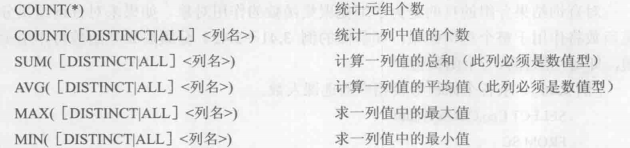

/*满足< */ select Sname,Sage from Student where Sage<10;
/*满足between*/ select Sname,Sdept,Sage from Student where Sdept between20and23;
/*in取出在里面的*/ select Sname,Sex from Student where Sdept in('CS','MA');
/*字符匹配*/ select Sname,Sno,Ssex /*查出刘姓同学的姓名，学号，性别*/ from student where Sname like'刘%'; /*%任意个字符，_(下横线)单个字符*/
/*空值查询*/ select Sno,Cno from SC where Grade isnotnull;
/*多重条件查询*/ select Sname from Student where Sdept='CS'and Sage<20;
select Sname,Ssex from Student where Sdept='CS'or Sdept='MA';
order by 语句
1 2 3 4
select Sno,Grade from sc where Cno ='3' orderby Grade desc; /*asc 升序，desc降序*/
聚集函数

当聚集函数遇到空值时，除了*count()**以外，都跳过空值而只处理非空值
where子句不能用聚集函数作为表达式
聚集函数只能用作select子句和group by 中的having子句
group by
将查询结果按照某一列或多列的值分组，值相等的为一组
1 2 3 4 5 6 7 8 9 10
select Cno,count(Sno) from sc groupby Cno;
/*having语句:查询选修了三门以上的学生学号*/ select Sno from SC groupby Sno havingcount(*)>3; /*先分组后用count计数*/
where 和having区别在于作用对象不同，where作用于基本表或视图，选择满足条件的元组，having作用域组，选择满足条件的组
（2）连接查询
1 2 3 4 5 6 7 8 9 10 11 12 13 14
/*自身连接*/ select first.Cno,second.Cpno /*起别名*/ from Course first,Course second where first.Cpno=second.Cno;
/*外连接*/ select Student.Sno,Sname,Ssex,Sage,Sdept,Cno,Grade from Student leftouterjoin SC on(Student.Sno = SC.Sno; /*也可以使用using去掉重复值*/ /*多表连接*/ select Student.Sno,Sname,Cname,Grade from Student,SC,Course where Student.Sno=SC.Sno and SC.Cno = Course.Cno; /*通常先进行两个表的连接，再将结果和第三个表来连接
（3）嵌套查询
1 2 3 4 5 6
select Sname,Sage from Student where Sage<ANY(select Sage from Student where Sdept ='CS') and Sdept <>'CS';
>ANY
大于于查询结果中的某个值
>ALL
大于子查询结果中的所有值
<ANY
小于子查询结果中的某个值
<ALL
小于子查询结果中的所有值
>=ANY
大于等于子查询结果中的某个值
>=ALL
大于等于子查询结果中的所有值
<=ANY
小于等于子查询结果中的某个值
<=ALL
小于等于子查询结果中的所有值
=ANY
等于子查询结果中的某个值
=ALL
等于子查询结果中的所有值(通常没有实际意义)
!=(或<>)ANY
不等于子查询结果中的某个值
!=(或<>)ALL
不等于子查询结果中的任何一个值
exists谓词
1 2 3 4 5 6 7 8 9 10 11 12
/*不存在这样的课程，学生201215122选修了，而学生x没有选*/ SELECTDISTINCT Sno FROM SC SCX WHERENOTEXISTS (SELECT M FROM SC SCY WHERE SCY Sno='201215122'AND NOTEXISTS (SELECT FROM SC SCZ WHERE SCZ.Snos=SCX.Sno AND SCZ Cno=SCY Cno));